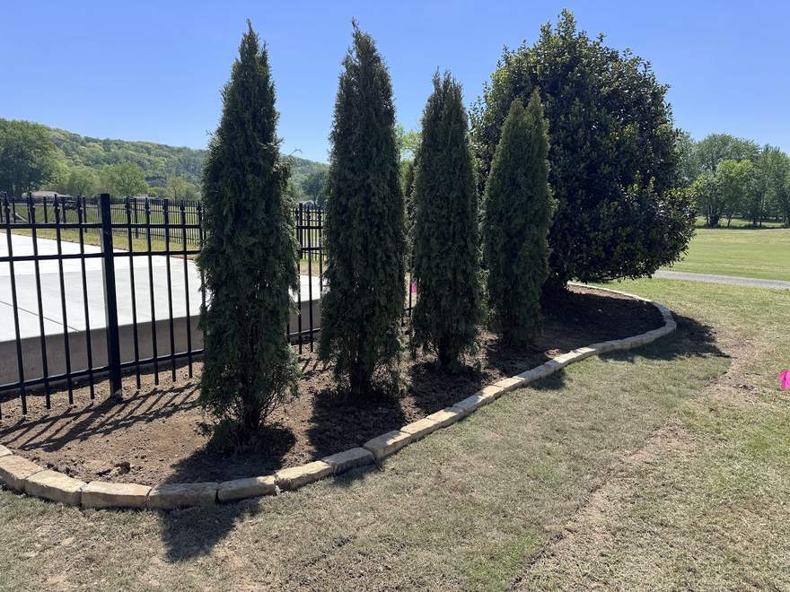
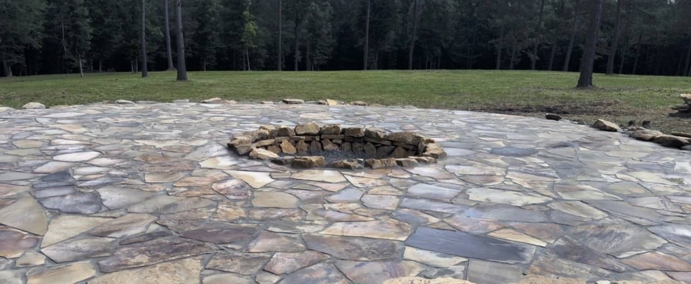
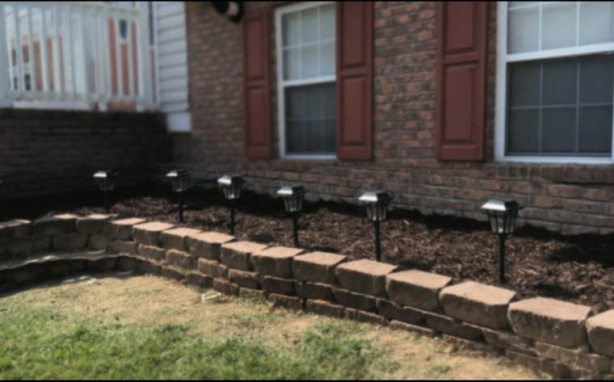
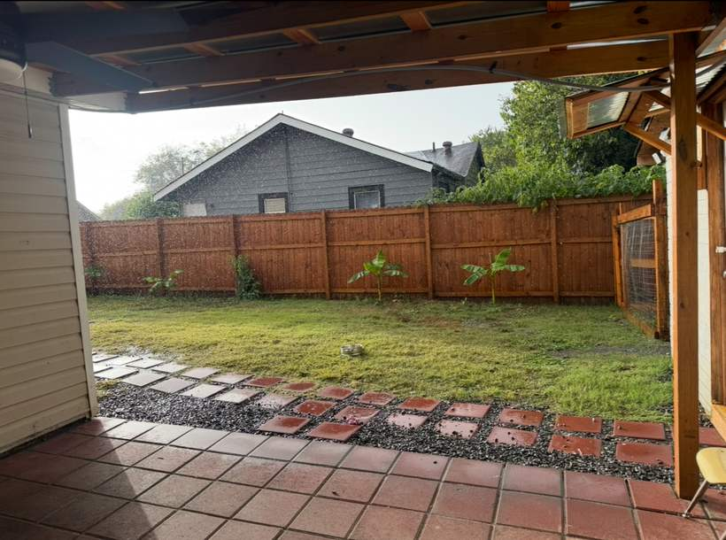
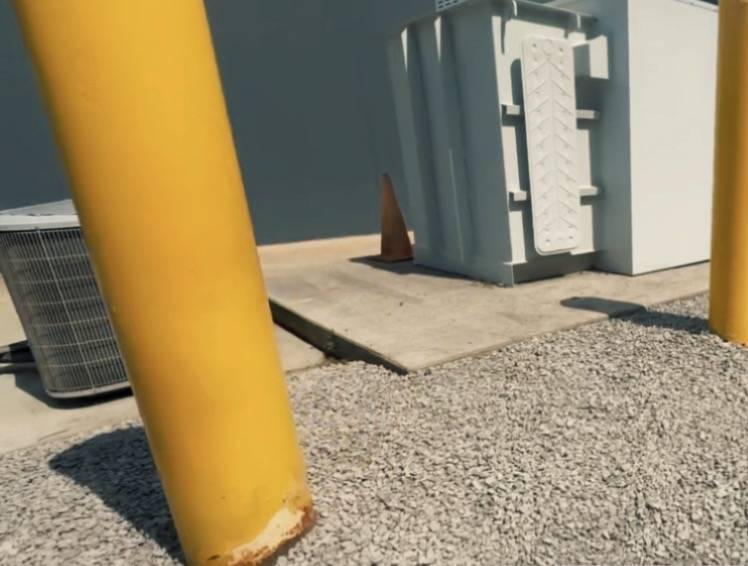

Stone bed borders & planting
Hand-laid stone edging, shaped beds, fresh mulch and new plantings set in.
Hardscape & landscape · Chattanooga, Tennessee
Morales Hardscape & Landscape builds outdoor spaces in Chattanooga and the surrounding area: dry-laid flagstone patios, stone fire pits, retaining walls, bed borders and walkways — and the planting, mulch, pine straw, mowing and trimming that keep it all looking right afterwards. Residential and commercial. 5.0 stars from 10 Google reviews.

The work
These are the photographs Morales Hardscape & Landscape posted to their own Google listing. Nothing here is a stock picture of somebody else’s yard.

Hand-laid stone edging, shaped beds, fresh mulch and new plantings set in.

Segmental block walls that hold a grade back and turn a slope into usable bed.

Pavers and flagstone set in gravel — paths, stepping stones and sitting areas.

Not only backyards — curbing, gravel and grounds work on commercial lots too.
What they do
Every item on this list is something their own photographs or their own Google reviews actually show or describe. Nothing has been added to pad it out.
Not sure which of these you need? That is normal — call and describe the yard.
What customers say
Quoted from the public Google reviews, word for word, trimmed only with ellipses. Reviewers are not named here.
“They did a wonderful job helping create a fire pit and the kids are thrilled with the dedicated playground space they built. Great communication, good prices and nice guys. Would highly recommend!”
Google review · October 2026“They are very professional, organized, and reasonable in pricing. They have kept my dad’s yard looking very well kept and trimmed. I would definitely recommend them if you need lawn service.”
Google review · September 2026“They worked so hard removing weeds applying weed prevention and landscaping barrier and pine straw making my large area look great!!! Very sweet crew!!!”
Google review · July 2026“Great guys! They do great work. They’re super quick, super friendly and they’re usually available the same day if not in the next couple of days. 10 out of 10 would recommend!”
Google review · July 2026“Good prices”, “reasonable rates” and the comment about same-day availability are customers’ own words in their own reviews, not a promise made by the business. No price or rate is published anywhere.
Where they work
Morales Hardscape & Landscape is based in Chattanooga and works across the surrounding area. Their own posted work includes a flagstone patio and fire pit up on Signal Mountain, so the van does travel out of the city.
Both sides of the work are on offer — a one-off build like a patio, wall or fire pit, and ongoing upkeep like mowing, trimming, mulch and pine straw. Residential yards and commercial grounds.
If you are not sure you are inside the area, the quickest answer is to ring and ask. No exact radius is published.
Hours are not listed on this page on purpose — see the note at the foot.
Next step
A patio, a wall, a fire pit, beds that need taking back, or a lawn that needs keeping on top of — it is one phone call either way, and they answer texts.
5.0 from 10 Google reviews · Chattanooga, Tennessee